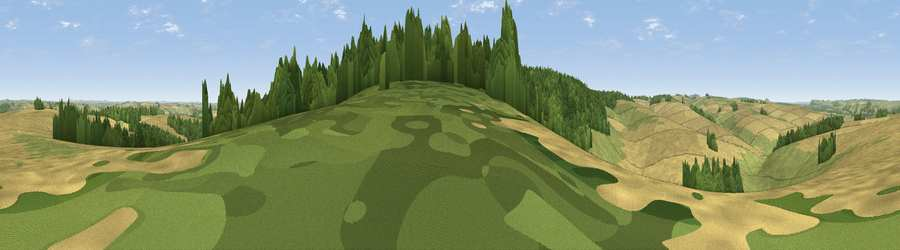

Viewpoint near Boyton
#22115 in England · top 32% of its area beats it · near BoytonWhere it is
The exact computed spot (ST 93475 37675). Click the marker for map links.
The view, rendered

A 360° render of this exact spot computed from the terrain model, tree cover and land cover — summer colours, afternoon light, calibrated against photographs of famous viewpoints. Real trees, hedges and buildings will differ in detail.
The panorama
Grey silhouette: terrain skyline in each direction (720 bearings, Earth curvature and refraction included). Dashed green: skyline with trees (+15 m) and buildings (+8 m) as obstacles. Blue strip: how far the ground is visible on each bearing.
Where the view opens
Wedge length = distance to the farthest visible ground on that bearing (vegetation-aware). Rings at 10, 25 and 50 km.
What fills the view
55% cropland · 23% grassland · 22% woodland
Angular shares of the visible panorama (visual magnitude), not map area. Landscape diversity 0.44 (0–1 Shannon).
Key numbers
More beautiful places nearby
The staircase of upgrades: each row has a higher view potential than everything closer. Driving times are estimates from straight-line distance, calibrated against real road routing — check an actual route before setting out.
| Place | Direction | Drive | Score |
|---|---|---|---|
| Viewpoint near Boyton | NNE · 1 km | ~4 min | 51.3 |
| Viewpoint near Sherrington | ESE · 2 km | ~5 min | 52.0 |
| Viewpoint near Hill Deverill | WNW · 5 km | ~10 min | 53.4 |
| Viewpoint near Codford | ENE · 6 km | ~12 min | 60.2 |
| Viewpoint near Fonthill Gifford | SSW · 8 km | ~16 min | 64.2 |
| Viewpoint near West Knoyle | SW · 8 km | ~17 min | 66.4 |
| Viewpoint near Monkton Deverill | W · 9 km | ~18 min | 70.9 |
| Cley Hill | NW · 12 km | ~22 min | 76.8 |
51.13831, -2.09464 · source: screening · position refined by local search. Computed location — check access rights before visiting.